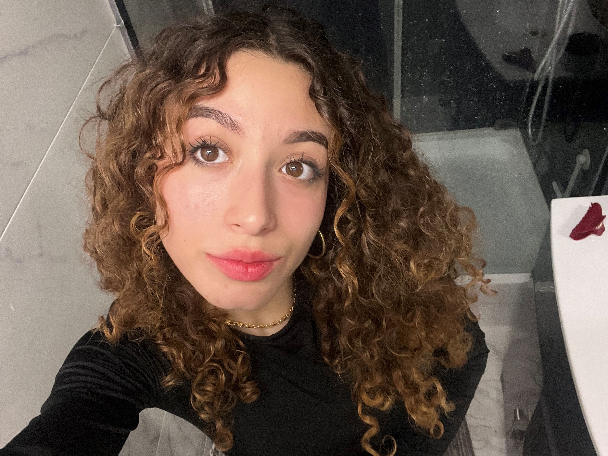

Rubrique Chats
Les chats c’est sa vie. .

Nana, amoureuse des félins(elle est secretement un félins elle aussi, elle se transforme lorsqu'elle en a marre des humains
Coucou toi ! Ici c’est c'est le monde de Nana
Si tu ne connais pas Nana, laisse moi te dire qui elle est..
Nana c'est une stars que le monde ne connait pas encore, elle aspire pas à etre connus mais si elle l'était le monde ne tournerai qu'autour d'elle parce que cette femme est tout simplement incroyable, elle pourrait révolutionner le monde la mode ou de la musique si elle voulait, de par ces idées et sa vision, c'est une precurseuse de toute les trends, j'ai entendu dire que rihanna et asap rocky se faisait habiller par elle. Et pour cause, c'est LA spécialiste des spécialistes. Elle est pourrait mçme dirigées un pays si elle le voulai, (elle a deja un programme tout prêt pour l'éducation et la santé). Sans oublier qu'elle est incroyablement belle et charismatique ARRGHH cette femme est parfaite regardez svp
JSPSKSJS N'EST-ELLE PAS GRANDIOSE ???
Les chats c’est sa vie. .
J’adore les jupes plissées, les Doc Martens et les accessoires rose pastel !

Les dessins de Nana